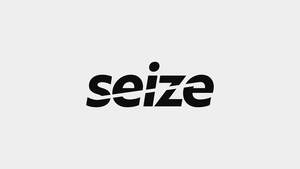

Trade Mark Journal No.2026/011 13 March 2026
UK00004346716 27 February 2026 (9,10,35,42)

- Class 9
- Computers; laptops [computers]; embedded computers; computer peripheral devices; handheld computers; printers; computer hardware; computer software; electronic notepads; tablet computers; personal digital assistants (PDAs); touch screen computers; mobile telephones; mobile telephone covers; electronic book readers; electronic communication equipment and instruments; computer covers; covers for electronic notebooks; covers for tablet computers; apparatus for data storage; global positioning system (GPS) devices; electronic organizers and software thereto; batteries; battery chargers; head phones; earphones; earbuds; smartwatches; wearable smartphones; wearable activity trackers; wearable computers; wearable computer peripherals; smart goggles; virtual reality headsets, glasses and goggles; headsets; virtual reality hardware; virtual reality software; augmented reality computer hardware; cameras; bags for cameras; augmented reality software; intelligent gateways for communication; monitors; mobile apps; recorded content; recorded media; media content; computer software applications; computer software platforms; artificial intelligence software; audio and audio-visual recordings; pre-recorded videos; electronic publications; downloadable podcasts; downloadable publications; parts and fitting for the aforesaid goods.
- Class 10
- Wearable monitors used to measure biometric data for medical use; devices for measuring blood sugar; medical apparatus and devices; medical diagnostic instruments; diagnostic, examination and monitoring equipment; apparatus for monitoring vital signs; heart rate monitors; blood pressure monitors; parts and fittings for the aforesaid goods.
- Class 35
- Advertising; marketing; sales promotions; online ordering services; retail services and wholesale services connected with the sale of computers, laptops [computers], embedded computers, computer peripheral devices, handheld computers, printers, computer hardware, computer software, electronic notepads, tablet computers, personal digital assistants (PDAs), touch screen computers, mobile telephones, mobile telephone covers, electronic book readers, electronic communication equipment and instruments, computer covers, covers for electronic notebooks, covers for tablet computers, apparatus for data storage, global positioning system (GPS) devices, electronic organizers and software thereto, batteries, battery chargers, head phones, earphones, earbuds, smartwatches, wearable smartphones, wearable activity trackers, wearable computers, wearable computer peripherals, smart goggles, virtual reality headsets, glasses and goggles, headsets, virtual reality hardware, virtual reality software, augmented reality computer hardware, cameras, bags for cameras, augmented reality software, intelligent gateways for communication, monitors, mobile apps, recorded content, recorded media, media content, computer software applications, computer software platforms, artificial intelligence software, audio and audio-visual recordings, pre-recorded videos, electronic publications, downloadable podcasts, downloadable publications, wearable monitors used to measure biometric data for medical use, devices for measuring blood sugar, medical apparatus and devices, medical diagnostic instruments, diagnostic, examination and monitoring equipment, apparatus for monitoring vital signs, heart rate monitors, blood pressure monitors, parts and fitting for the aforesaid goods; business management; business administration; business assistance; provision of business and commercial information; office functions; computerised data verification; database management services; data processing; data management; telecommunication services (arranging subscriptions to) for others; information, consultancy and advisory services relating to all the aforesaid services.
- Class 42
- Design and development of computers and computer software, tablet computers, touch screen computers, personal digital assistants (PDAs), mobile telephones, global positioning system (GPS) devices, electronic organizers, wearable computers, wearable computer hardware, smartwatches and software thereto, games and gaming devices; information technology support services; leasing of computer hardware; scientific and technological services; design services; computer consultancy; design of computer databases; computer programming; computer software installation; maintaining databases; electronic storage of digital media; hosting of digital content; providing temporary use of non-downloadable and web-based computer software; Software as a service (SAAS); Platform as a service (PAAS); blockchain as a service (BAAS); artificial intelligence as a service (AIAAS); infrastructure as a services (IAAS); providing artificial intelligence computer programs on data networks; software as a service [SaaS] featuring computer software platforms for artificial intelligence; design consultancy; information, consultancy and advisory services relating to all the aforesaid services.
William Nicolson
Representative: Trademark Eagle Limited